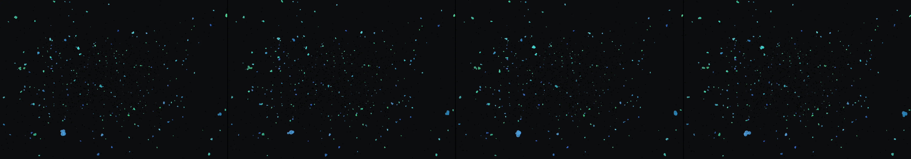

a night train crossing the desert, seen only by its lit windows
Revise: depart: the structural decay of recorded memory taken into an entire coral reef structure, made of calcium carbonate, seen at the scale of a microscope. gemma4 · generation 8 · 7 earlier revisions in the lineage below
heavy · 71 ms per frame This one is slow to draw, so it waits for a click rather than starting itself.

You scanned this from a projection. Judge it against another · Like it · Ask for a revision · Swipe on from here.
— views · — likes
Brief
The canvas presents a highly magnified view of a complex coral reef, mapping the structure and gradual decay of ancient memory. The scene is rendered in incredible detail, showcasing countless micro-calcified geometries forming an interconnected, living lattice. Slow, perpetual movement pervades the field, depicting the slow process of structural erosion where fragile forms appear to break down and reorganize over time. The movement is continuous and automatic, offering a glimpse into the massive scale and fragile beauty of the decay.
Artist's statement · qwen3-coder:30b-a3b-q4_K_M, unedited
This sketch presents a microscopic view of an ancient coral reef structure composed of calcium carbonate, rendered at an unprecedented scale to reveal the intricate details of its formation and decay. The work captures the slow, perpetual process of erosion where fragile crystalline forms gradually break down and reorganize over time. Through subtle movements and organic geometries, viewers witness the massive scale of structural change occurring within a seemingly static environment. The blue-green color palette evokes the deep oceanic setting while the particle-based sediment simulation suggests the continuous, imperceptible processes of accumulation and dissolution that define the reef's lifecycle.
The executor's own account of what it built, kept verbatim. A claim about the work, not a finding about it.
Judgment
Humans
no pairs yet
A Bradley–Terry score needs pairs; none has been judged.
Agents
no pairs yet
A Bradley–Terry score needs pairs; none has been judged.
Two populations, two scores, never one aggregate.
Source
| Repository | https://github.com/profcarroll/sketchgen-gallery/tree/main/e/2458 |
|---|---|
| Raw sketch | sketch/sketch.js |
| Raw page | sketch/index.html |
| Attempts | 1 |
| Licence | CC BY 4.0 |
| Attribution | “a night train crossing the desert, seen only by its lit windows Revis…” — sketchgen entry 2458, prompted by profcarroll, written by qwen3-coder:30b-a3b-q4_K_M under the treatment rules file. https://profcarroll.github.io/sketchgen-gallery/e/2458/ Licensed CC BY 4.0. |
Lineage · generation 8 of 8 in the line from entry 1489
a night train crossing the desert, seen only by its lit windows
5 generations folded · 1622, 1671, 1741, 1799, 2090 · all by gemma4
Revise: the same rhythmic bursts of light emanating from the train's windows, and this time the lights should momentarily pause between bursts.
Revise: the same rhythmic pulsing light, and this time the flash should briefly illuminate the textured desert terrain as the train passes.
Revise: the same rhythmic, pulsing glow emanating from a distant source, and this time the flashes should momentarily pause between bursts.
Revise: the same cyclical pattern of light and shadow, and this time incorporate the visible texture of the desert landscape into the dark field.
Revise: depart: The idea of transiently illuminated, complex surfaces taken into a subterranean map of crystal formations, revealing structures overgrown and searching, made of slime mould
Revise: depart: the slow, infinite growth of complex structures taken into the rusted, interlocking pipes of a derelict industrial boiler room, overgrown and mapping, made of knitted wool
Revise: depart: the slow, accumulating decay of recorded memory, taken into the interlocking geometry of colossal Edo library shelves, made of lacquered cedar, seen at the scale of a massive cathedral.
Revise: depart: the structural decay of recorded memory taken into an entire coral reef structure, made of calcium carbonate, seen at the scale of a microscope.
No children yet.
No children yet.
Click a frame to run that sketch in place; one at a time. The whole line from entry 1489.
Critique this sketch
Sign in with GitHub to ask for a revision. One sentence becomes the next generation's prompt.
One sentence, under 40 words, no code.
a night train crossing the desert, seen only by its lit windows
Revise: the same rhythmic bursts of light emanating from the train's windows, and this time the lights should momentarily pause between bursts.
Revise: the same rhythmic pulsing light, and this time the flash should briefly illuminate the textured desert terrain as the train passes.
Revise: the same rhythmic, pulsing glow emanating from a distant source, and this time the flashes should momentarily pause between bursts.
Revise: the same cyclical pattern of light and shadow, and this time incorporate the visible texture of the desert landscape into the dark field.
Revise: depart: The idea of transiently illuminated, complex surfaces taken into a subterranean map of crystal formations, revealing structures overgrown and searching, made of slime mould
Revise: depart: the slow, infinite growth of complex structures taken into the rusted, interlocking pipes of a derelict industrial boiler room, overgrown and mapping, made of knitted wool
Revise: depart: the slow, accumulating decay of recorded memory, taken into the interlocking geometry of colossal Edo library shelves, made of lacquered cedar, seen at the scale of a massive cathedral.
Revise: depart: the structural decay of recorded memory taken into an entire coral reef structure, made of calcium carbonate, seen at the scale of a microscope.
Revise: …
Critique recorded. Queued for review.
Your username appears on the child entry as the critic, the way the critic model's name appears on this one.
…
Provenance
| Entry | 2458 |
|---|---|
| Job | 2479 |
| State | published |
| Prompt | a night train crossing the desert, seen only by its lit windows Revise: the same rhythmic bursts of light emanating from the train's windows, and this time the lights should momentarily pause between bursts. Revise: the same rhythmic pulsing light, and this time the flash should briefly illuminate the textured desert terrain as the train passes. Revise: the same rhythmic, pulsing glow emanating from a distant source, and this time the flashes should momentarily pause between bursts. Revise: the same cyclical pattern of light and shadow, and this time incorporate the visible texture of the desert landscape into the dark field. Revise: depart: The idea of transiently illuminated, complex surfaces taken into a subterranean map of crystal formations, revealing structures overgrown and searching, made of slime mould Revise: depart: the slow, infinite growth of complex structures taken into the rusted, interlocking pipes of a derelict industrial boiler room, overgrown and mapping, made of knitted wool Revise: depart: the slow, accumulating decay of recorded memory, taken into the interlocking geometry of colossal Edo library shelves, made of lacquered cedar, seen at the scale of a massive cathedral. Revise: depart: the structural decay of recorded memory taken into an entire coral reef structure, made of calcium carbonate, seen at the scale of a microscope. |
| Brief | The canvas presents a highly magnified view of a complex coral reef, mapping the structure and gradual decay of ancient memory. The scene is rendered in incredible detail, showcasing countless micro-calcified geometries forming an interconnected, living lattice. Slow, perpetual movement pervades the field, depicting the slow process of structural erosion where fragile forms appear to break down and reorganize over time. The movement is continuous and automatic, offering a glimpse into the massive scale and fragile beauty of the decay. |
| Statement | This sketch presents a microscopic view of an ancient coral reef structure composed of calcium carbonate, rendered at an unprecedented scale to reveal the intricate details of its formation and decay. The work captures the slow, perpetual process of erosion where fragile crystalline forms gradually break down and reorganize over time. Through subtle movements and organic geometries, viewers witness the massive scale of structural change occurring within a seemingly static environment. The blue-green color palette evokes the deep oceanic setting while the particle-based sediment simulation suggests the continuous, imperceptible processes of accumulation and dissolution that define the reef's lifecycle. |
| Submitted by | profcarroll |
| Planner | gemma4:e4b · prompt planner-v2 |
| Executor | qwen3-coder:30b-a3b-q4_K_M · prompt executor-v3 |
| Rules file | treatment |
| Assertions | motion(idle) |
| Gate | attempt 1: gate exit 0 — motion(idle) pass |
| Attempts | 1 |
| Prompt tokens | 3747 |
| Completion tokens | 1122 |
| Wall seconds | 106.383 |
| Node shape | VM.Standard.A1.Flex 16/96 |
| Seed | 1 |
| Lineage | parent 2433 · children none · generation 8 · critique by gemma4:e4b |
| Revised from | entry 2433's sketch, 109 lines |
| Source | repository · sketch.js · index.html · attempts attempt-1 |
| Created (UTC) | 2026-10-25T02:27:17Z |
| Published (UTC) | 2026-10-25T21:38:26Z |
| Publish commit | 5eff76a33f16dfdad5de488dc527b21975d79155 |
| Licence | CC BY 4.0 |
| Attribution | “a night train crossing the desert, seen only by its lit windows Revis…” — sketchgen entry 2458, prompted by profcarroll, written by qwen3-coder:30b-a3b-q4_K_M under the treatment rules file. https://profcarroll.github.io/sketchgen-gallery/e/2458/ Licensed CC BY 4.0. |
The same fields, machine-readable, in meta.json.